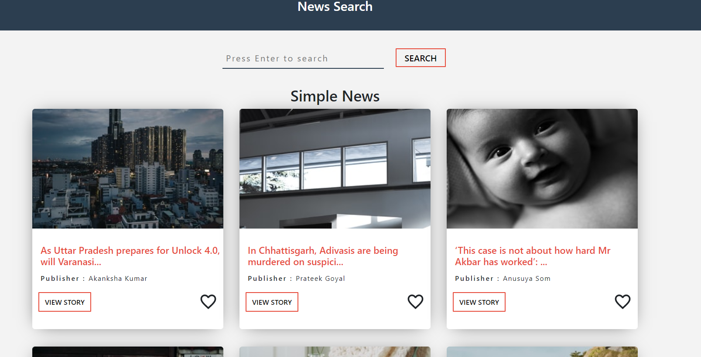
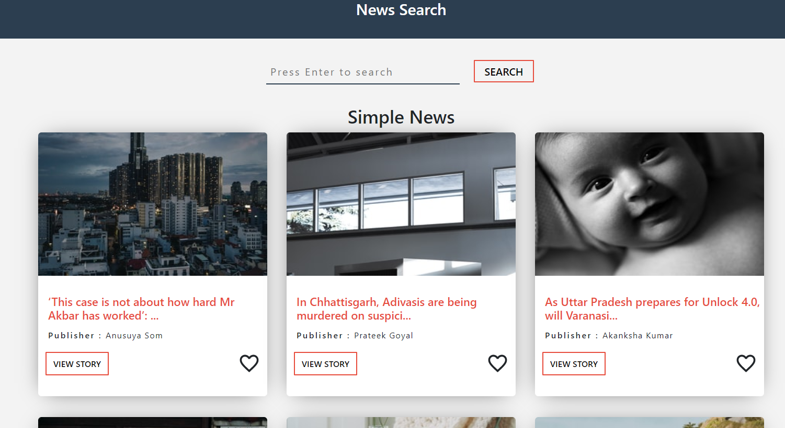
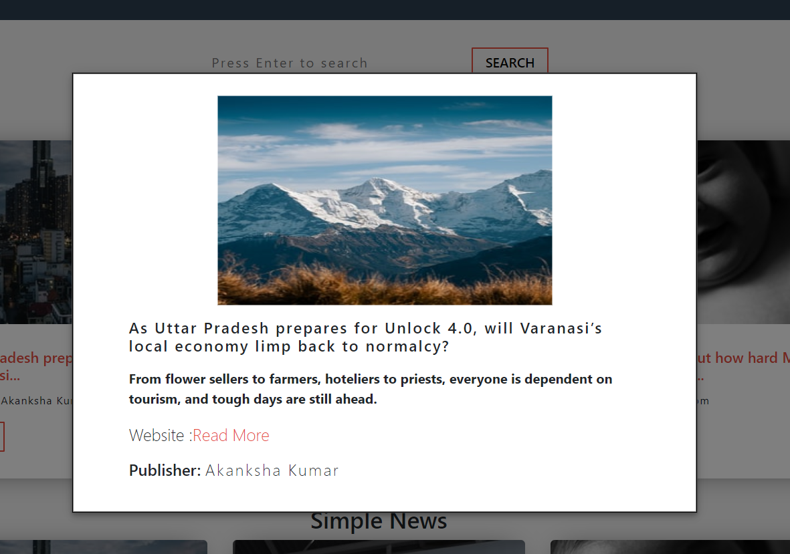
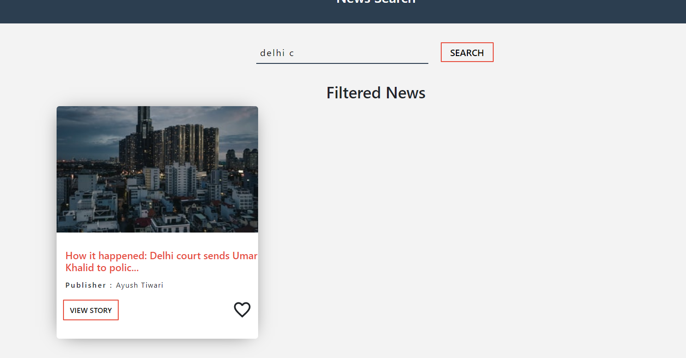

NewsLaundry
This was a project I was apt in ReactJS and wanted even more
knowledge in Firebase
Client can view various newsfeed in Details
Customize their own Newsfeed which can be saved
Client has the ability to dynamically search for news
Technologies:
- - Javascript
- - React JS
- - Color Picker
- - Materialize UI
- - Github Deploy
- - localhost Database
- - NewsLaundry Api
- - Github: CLICK HERE
- - Hosted URL: CLICK HERE
Dashboard

Customize Preferred News

Detailed Feed

Searchable Feed
